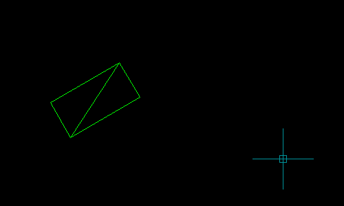

Copy or Rename Block Reference
This page is delivered for consistency purposes only, as part of the LeeMac sample module of DynALisp, which shows how DynALisp turns existing AutoLISP programs into a module. The program and its description are the work of Lee Mac, who keeps all the credit for them. The original page, with the latest version, is on Lee Mac's website: https://lee-mac.com/copyblock.html
| Function Syntax | LM-CopyRenameBlock – original syntax: CB (Copy) / RB (Rename) (see aliases) |
| Current Version | 1.5 |
| Compatible with AutoCAD for Mac? | No |
| Compatible with AutoCAD LT? | No |
| Original Page | lee-mac.com/copyblock.html |
Program Description
This program allows a user to copy and/or rename a single block reference in the working drawing.
Many existing programs enable the user to rename the block definition for a given block reference, with the new name subsequently reflected across all references of the block definition in the drawing. However, this program will allow a single selected block reference to be renamed (or for the user to create a renamed copy of the selected block reference), by generating a duplicate renamed block definition for the selected block.
The program may be called from the command-line using either CB to create a renamed copy of a selected block reference, or RB to simply rename the selected block reference.
Following selection of a block reference, the user is prompted to specify a name for the selected/copied block reference; a default block name composed of the original block name concatenated with both an underscore and the minimum integer required for uniqueness within the block collection of the active drawing is offered.
The program will then proceed to duplicate the block definition using the new block name. To accomplish this without resulting in a duplicate key in the block collection of the active drawing, the program utilises an ObjectDBX interface to which the block definition of the selected block reference is deep-cloned, renamed, then deep-cloned back to the active drawing. This method also enables Dynamic Block definitions to be successfully copied & renamed.
This program will furthermore perform successfully in all UCS/Views and is also compatible with Anonymous Blocks, Dynamic Blocks & XRefs.
Demonstration

Bundled program notes
;;-----------------=={ Copy/Rename Block Reference }==------------------;;
;; ;;
;; This program allows a user to copy and/or rename a single block ;;
;; reference in the working drawing. ;;
;; ;;
;; Many existing programs enable the user to rename the block ;;
;; definition for a given block reference, with the new name ;;
;; subsequently reflected across all references of the block ;;
;; definition in the drawing. However, this program will allow a ;;
;; single selected block reference to be renamed (or for the user to ;;
;; create a renamed copy of the selected block reference), by ;;
;; generating a duplicate renamed block definition for the selected ;;
;; block. ;;
;; ;;
;; The program may be called from the command-line using either 'CB' ;;
;; to create a renamed copy of a selected block reference, or 'RB' to ;;
;; simply rename the selected block reference. ;;
;; ;;
;; Following selection of a block reference, the user is prompted to ;;
;; specify a name for the selected/copied block reference; a default ;;
;; block name composed of the original block name concatenated with ;;
;; both an underscore and the minimum integer required for uniqueness ;;
;; within the block collection of the active drawing is offered. ;;
;; ;;
;; The program will then proceed to duplicate the block definition ;;
;; using the new block name. To accomplish this without resulting in ;;
;; a duplicate key in the block collection of the active drawing, the ;;
;; program utilises an ObjectDBX interface to which the block ;;
;; definition of the selected block reference is deep-cloned, renamed, ;;
;; and then deep-cloned back to the active drawing. This method also ;;
;; enables Dynamic Block definitions to be successfully copied ;;
;; & renamed. ;;
;; ;;
;; Finally, this program will perform successfully in all UCS/Views ;;
;; and is compatible with Anonymous Blocks, Dynamic Blocks & XRefs. ;;
;;----------------------------------------------------------------------;;
;; Author: Lee Mac, Copyright © 2013 - www.lee-mac.com ;;
;;----------------------------------------------------------------------;;
;; Version 1.5 - 05-07-2013 ;;
;;----------------------------------------------------------------------;;
Command Names And Aliases
As in every DynALisp module, each program of this sample module has one main command, named LM-*, and the original command names of Lee Mac's page are kept as its aliases: they run the same command, and can be added, renamed or removed in Dyl-Suite (saved in Resources\Aliases.csv). The rows marked ↳ are child commands of LM-CopyRenameBlock: they are run by their alias, or picked from LM-CopyRenameBlock when it lists them (their command is named Pst-*).
| Command | Aliases | Name |
|---|---|---|
| LM-CopyRenameBlock | – | Copy / Rename Block |
| ↳ CB | – | Copy Block Reference |
| ↳ RB | – | Rename Block Reference |